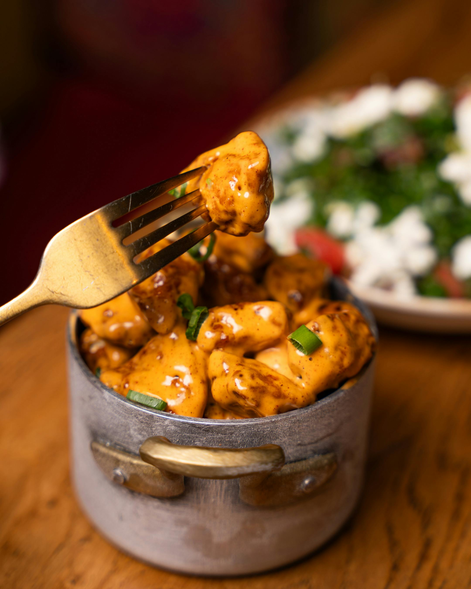

Creamy Chicken Stroganoff

Recipe Description
Chicken stroganoff is a creamy, comforting recipe made with chicken, mushrooms, and a flavorful sauce.
This dish is inspired by classic beef stroganoff, but it uses chicken instead of beef. It is easy to make and works well for a simple lunch or dinner.
I like this recipe because it can be served with different sides, such as rice, pasta, mashed potatoes, or egg noodles.
It is a warm and filling dish, making it a great option for an everyday homemade meal.
Recipe Ingredients
All ingredients for this recipe are listed below:
For the chicken
- 680g of chicken breasts or cutlets
- Salt and pepper to taste
- 1 tablespoon (15ml) Worcestershire sauce
- 1 teaspoon garlic powder
- 2 tablespoons (30ml) neutral oil
For the stroganoff
- 450g of wide egg noodles
- 6 tablespoons (90ml) of olive oil
- 680g of cremini mushrooms
- 6 tablespoons (84g) butter
- 1 large onion, sliced
- 1/4 cup (32g) flour
- 1/2 cup (120ml) dry white wine
- 3 cups (720ml) low-sodium chicken stock
- 1/2 cup (120ml) heavy cream
- 1/2 cup (120g) sour cream
- 1 tablespoon (15g) Dijon Mustard
- 2 tablespoons (30ml) Worcestershire sauce
- 2 teaspoons Hungarian paprika
- 1 cup (240ml) pasta water for thinning
- Salt and pepper to taste
- Chopped pickles for serving, optional
Instructions
For the chicken
- In a large bowl mix the chicken with the Worcestershire, pepper, salt, and garlic powder. Refrigerate for at least 2 hours, or up to overnight.
- Heat a large pan to medium-high heat and add the neutral oil. Sear the chicken breasts for 3-4 minutes on the first side then 2-3 minutes on the second side or until browned. Remove the chicken breasts to a dish and tent with foil to keep warm. Pour 1/2 cup of chicken stock into the pan and scrape the bottom of the pan to remove all of the brown bits. Combine the pan juices with the remaining 2 1/2 cups of chicken stock and set aside.
- After the chicken has rested for at least 5 minutes, slice it into bite size pieces and set it aside tented with foil.
For the chicken stroganoff
- Bring a large pot of salted water to boil.
- Heat a large pan to medium and add 3 tablespoons of olive oil and the mushrooms. Cook the mushrooms until they release their water and brown, then season with salt and pepper to taste and remove them to a bowl.
- Add the remaining olive oil, 3 tablespoons of butter, and the onions to the pan and saute until soft and brown (about 10-15 minutes).
- At this time begin cooking the egg noodles to the package instructions and when finished toss with 3 tablespoons of butter. Make sure to reserve at least 2 cups of pasta water.
- Add the flour to the pan and cook for 2 minutes or until all of the white specks are gone.
- Add the white wine and chicken stock to the pan and turn the heat to high. With a flat wooden spoon, scrape the bottom of the pan to dislodge all of the brown bits.
- Bring to a boil while whisking until smooth for 3 minutes. Lower the heat to a simmer and add the mushrooms, sliced chicken and juices, mustard, Worcestershire sauce, and paprika. Continue to cook at a low simmer while waiting for the noodles.
- Add the heavy cream and sour cream to the pan and continue to simmer for 2 minutes. Taste test the sauce and adjust salt and pepper if required. If the sauce is too thick add a few ounces of the reserved pasta water. When satisfied remove the pan from the heat.
- Divide the noodles into bowls and ladle the stroganoff over each one. Garnish with parsley and serve with chopped pickles. Enjoy!
Notes
- Boneless skinless chicken thighs can be used. If using thighs, cook all the way through and to an internal temperature of at least 185°F/85°C before adding to the sauce.
- In addition to egg noodles, chicken stroganoff can be served on top of mashed potatoes or dumplings.
- Leftovers can be saved for up to 3 days in the fridge, and can be reheated on the stovetop or microwave.
Nutrition
Calories: 880kcal | Carbohydrates: 74.1g | Protein: 43g | Fat: 45.5g | Saturated Fat: 18.9g | Cholesterol: 228mg | Sodium: 664mg | Potassium: 563mg | Fiber: 4.4g | Sugar: 15.8g | Iron: 6mg